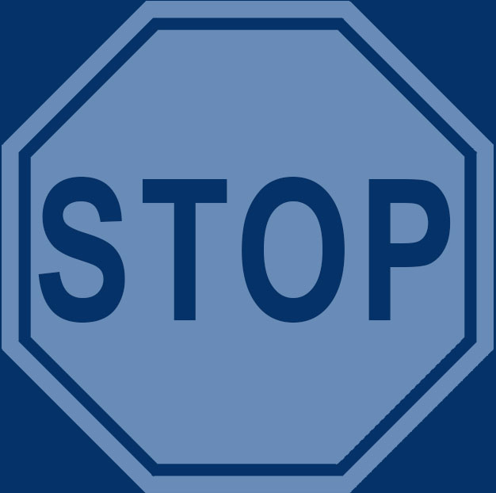

<ion-content>
  <div class="summaryPopup howitworksPop">
    <span class="closePopup"  (click)="closeModal()">X</span>
    <h3>HOW IT WORKS</h3>
    <div class="pBanner"></div>
      <div class="readMatterInr" id="readMatterInr">
    <!-- <p>--><b>STOP</b> is the first step in S.O.S.  Stopping and taking a breath engages the rational brain necessary for problem-solving. Otherwise your focus narrows and fight or flight kicks in creating a knee-jerk reaction which can feel beyond your control. Stopping before you respond creates mental space and gives you power to respond intentionally to situations that are not life threatening. Stopping to breathe is the first step to changing habitual behavior.<!--</P>   -->
      <p><b>BREATHING TECHNIQUE</b></p>
        <ul>
          <li>Relax your shoulders and jaw</li>
          <li>Breathe in through your nose to the count of 4</li>
          <li>Breathe out to the count of 4</li>
          <li>Repeat the cycle 4 times</li>
        </ul>
      <!-- </p> -->
      <p>Once complete go to <b>OBSERVE</b></p>
          </div>
          <button class="deepDive yellow" id="deepDive" (click)="onheight()">Deeper Dive</button>
         <button class="dive" id="dive" (click)="ofheight()">Dive Deeper</button>
  </div>

</ion-content>
